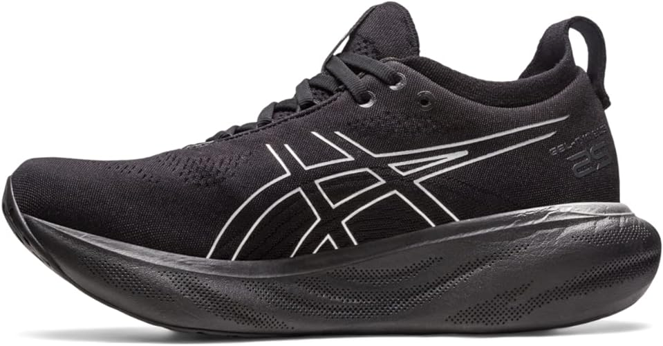

Por incrível que pareça, há sim um sapato que, de acordo com pesquisas, é considerado o mais confortável do mundo.
O ASICS GEL-NIMBUS 25 é um tênis de corrida que tem o objetivo de melhorar aterrissagens e amortecimento. O mesmo também contém tecnologia PureGEL, que não é visível do lado externo do calçado e está presente na entressola, sendo a causa das passadas mais leves.
